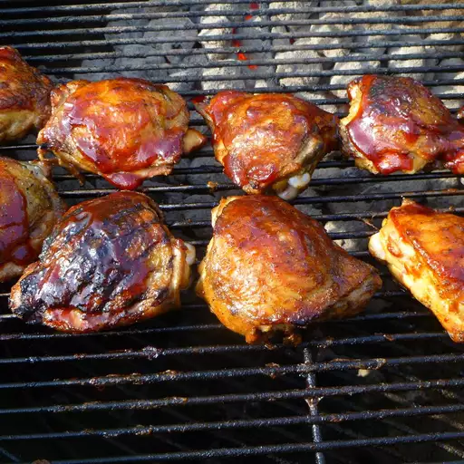

Barbeque Chicken

Desciption
Barbecue chicken consists of chicken parts or entire chickens[1] that are barbecued, grilled or smoked.
There are many global and regional preparation techniques and cooking styles. Barbecue chicken is often seasoned or coated in a spice rub, barbecue sauce, or both.
Marinades are also used to tenderize the meat and add flavor. Rotisserie chicken has gained prominence and popularity in U.S. grocery markets.
Barbecued chicken is one of the world's most popular barbecue dishes.
Various techniques exist for cutting poultry for barbecuing, including skewering, butterflying, halving[3] quartering and using individual pieces.
Many diverse cooking and flavoring techniques exist for this dish.
Ingredients
- 4 tablespoons water
- 3 tablespoons ketchup
- 3 tablespoons brown sugar
- 2 tablespoons vinegar
- 1 tablespoon lemon juice
- 2 tablespoons Worcestershire sauce
- 1 teaspoon salt
- 1 teaspoon dry mustard
- 1 teaspoon chili powder
- 12 chicken thighs, skin removed
Steps
- Preheat the oven to 500 degrees F (260 degrees C).
In a small saucepan over medium heat, stir together the water, ketchup, brown sugar, vinegar, lemon juice, and Worcestershire sauce.
Season with salt, mustard powder, and chili powder.
Simmer the sauce for 15 minutes.
- Place the chicken thighs into an oblong baking dish, and pour the sauce over them. Cover tightly.
- Bake for 15 minutes in the preheated oven, then reduce the temperature to 300 degrees F (150 degrees C), and bake for one hour.
Remove cover, stir and bake uncovered for 15 minutes.